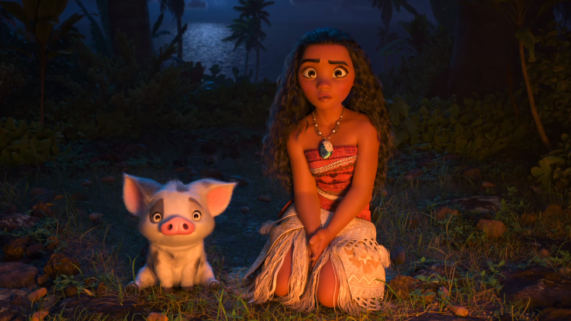

[Review] Moana: Chuyến Vượt Đại Dương Hoành Tráng Của Nàng Công Chúa Không Mê Trai
Chỉ cần mặc váy và dẫn theo vật nuôi, chắc chắn là một nàng công chúa. Đây chính là lời khẳng định của á thần Maui. Bởi thế, dù không phải con vua, dù không lấy hoàng tử, Moana vẫn là một nàng công chúa.
Nếu như đầu năm Disney đưa khán giả tới tương lai xa xôi với thành phố động vật Zootopia thì cuối năm, họ lại đem chúng ta vượt ngàn năm trở về thuở hồng hoang, khi các vị thần cai quản và bảo vệ thế giới này.
Lỡ lấy đi trái tim của nữ thần sáng tạo Te Fiti, cả bản thân á thần Maui và thế giới loài người đều gặp họa. Bóng tối bắt đầu trỗi dậy và dần nghiền nát những làng quê xinh đẹp.
Nhiều năm sau, băng qua ngàn trùng đại dương xa thẳm, người xem đến với hòn đảo Montonui, nơi ở của cô bé Moana xinh xắn và gia đình. Moana mang trên vai trách nhiệm trở thành thủ lĩnh tương lai, kế tục cha ông, dẫn dắt những người dân chất phác của ngôi làng. Từ nhỏ đã là môt cô gái xinh đẹp dũng cảm nhưng Moana vẫn luôn sống trong vòng tròn an toàn của cha mình. Cô bé bị bó buộc trong bãi đá ngầm quanh bờ biển, chỉ biết khao khát nhìn ra biển xanh rộng lớn ngoài xa.
Tới khi mùa màng thất thu, hiểm họa tới gần, bằng tình yêu vô bờ với quê hương, Moana đã nghe theo lời khuyên của bà, nhận sứ mệnh tìm đến á thần Maui. Cô phải thuyết phục ông trả trái tim bị mất cắp cho nữ thần Te Fiti và cứu lấy trái đất khỏi diệt vong.
Tưởng rằng hành trình xuyên đại dương sẽ dễ dàng khi đi cùng một á thần, thế nhưng sự thật hoàn toàn không phải thế, rất nhiều nguy hiểm rình rập đang rình rập cả hai sau mặt biển trong veo.
Hình tượng Moana trong Hành Trình Moana ít nhiều gợi nhớ cậu bé Jacob Portman trong Miss Peregrine ‘s Home For Peculiar Children. Cả hai đều là những đứa trẻ nhiệt huyết, dũng cảm và có khả năng phi thường nhưng lại bị gia đình xã hội mài mòn đi. Chỉ tới khi một biến cố lớn xảy ra, buộc họ phải thay đổi.

Mất 5 năm để thực hiện, Moana quy tụ một ekip làm phim tài năng quen thuộc với các fan Disney nói riêng và giới làm phim hoạt hình nói chung. Ngoài biên kịch Jared Bush đã vô cùng thành công với kịch bản phim hay Zootopia hồi đầu năm, phim có sự cộng tác của 4 đạo diễn Ron Clements, Don Hall, John Musker và Chris Williams. Mỗi người trong số họ đều đã thắng hoặc có ít nhất một đề cử Oscar.
Điểm tuyệt vời nhất của Moana đến từ khâu hình ảnh. Đồ họa của phim vô cùng xuất sắc với những nhân vật được tạo hình hết sức tỉ mỉ từ màu da đến tận móng tay. Các phân cảnh trên bờ được thể hiện tinh tế, chi tiết khiến người xem tại rạp chiếu phim có thể cảm nhận được ánh mặt trời ấm nóng và tiếng sóng rì rầm của vùng bờ biển qua màn ảnh. Đại cảnh biển xanh lại càng không có bất cứ điểm gì có thể phàn nàn. Chân thật, thu hút và đẹp đến nao lòng. Các nhân vật phụ như gà Heihei hay chú heo Pua cũng gây ấn tượng đặc biệt.
Nhạc phim do Opetaia Foa'I, Mark Mancina và Lin-Manuel Miranda sáng tác mang đậm âm hưởng của đại dương, tuổi trẻ và những cuộc phiêu lưu. Khán giả có thể thoải mái thả mình trong Te Vaka và We Know The Way sôi động, You ‘re Welcome và Shiny hài hước. Và cuối cùng là lắng đọng cùng ca khúc chính How Far ‘ll I Go với phần lời vô cùng ý nghĩa.
Là một trong những nàng công chúa bình dân nhất Disney, Moana chỉ là con một thủ lĩnh bộ tộc. Không cung điện xa hoa, không được hoàng tử giàu có cưới làm vợ, cô gái nhỏ chỉ có làn da rám nắng, mái tóc đen xù, tình yêu quê hương và một trái tim dũng cảm. Thất bại nhiều lần trong cuộc hành trình, có những lúc mất hết tất cả, tưởng như tuyệt vọng nhưng Moana hết lần này đến lần khác đứng dậy và tiến tới với niềm kiêu hãnh. Ai có thể nói rằng cô không xứng đứng vào hàng ngũ công chúa của Disney?
Với chất giọng ngọt ngào, cô gái người Mỹ Auli'i Cravalho đã đem đến cho người xem một Moana vô cùng đáng yêu. Sinh năm 2000, cô bé cũng ở độ tuổi tương đương Moana trong phim. Họ còn có nhiều điểm chung khác như quê ở vùng biển - Moana đến từ làng Montonui, Auli'i Cravalho quê ở Hawaii . Đặc biệt, cả hai đều là những thiếu nữ xinh đẹp với làn da ngăm và mái tóc xoăn gợn sóng.
Gian ngoan và nhát gan, đó là tất cả những gì Moana thấy được từ vị á thần Maui vĩ đại trong lần gặp đầu tiên. Thế nhưng, Moana dần nhìn Maui với một con mắt khác. Là một á thần với quyền năng to lớn nhưng Maui cũng mang trong lòng nỗi sợ hãi đại dương và con quỷ lửa sau lần chiến bại thuở xưa. Với chiếc móc câu, Maui là kẻ mạnh nhất nhưng khi mất đi, Maui dường như vô dụng hơn cả một người phàm, nặng nề mặt cảm tự ti. Dẫu sao, vị á thần này cũng chỉ là đứa trẻ người phàm từng bị bỏ rơi.
Xuất thân từ một đô vật, trở thành sao bằng vai diễn hành động khoe cơ bắp trong The Scorpion King, dù thể hiện rất nhiều dạng nhân vật trên màn ảnh nhưng khó thể ngờ The Rock - Dwayne Johnson lại vào vai á thần Maui “ngọt” đến vậy. Bướng bỉnh, cáu kỉnh, tính cách như một đứa trẻ hay hờn giận của Maui kết hợp cùng chất giọng hài hước của Dwayne Johnson khiến khán giả không thể kiềm được tiếng cười.
Moana có nội dung thuộc hàng xuất sắc trong số series công chúa của Disney. Không dài dòng, không tình cảm lãng mạn, thậm chí cũng không có quá nhiều đất diễn cho nhân vật phụ, bộ phim chỉ tập trung vào hành trình của Moana. Đề tài bảo vệ môi trường và sự phẫn nộ của thiên nhiên được lồng ghép vô cùng xuất sắc. Cách giải quyết cuối phim chắc chắn sẽ khiến khán giả bất ngờ và không kém phần xúc động.
Nếu Finding Dory năm nay khiến nhiều người có phần “hụt hẫng” vì cuộc phiêu lưu giữa biển xanh đã biến thành “trò chơi trốn tìm” trong lồng kính viện hải dương thì nay Moana đã bù lại cho các fan Disney một đại dương xanh thẳm mênh mông, đẹp khó lòng tả nổi. Ngoài ra, đáy biển sâu với những phân đoạn rùng rợn không thích hợp với phim thiếu nhi của Finding Nemo cũng được tái hiện trong Moana với độ kỳ dị hơn bộ phim Oscar Hoạt Hình 2004 gấp nhiều lần. Tuy nhiên, so với Zootopia với nhiều “trứng phục sinh” đen tối, Moana “dọa” khán giả đơn giản, dễ hiểu và “hiền lành” hơn.
2016 là một năm “ăn nên làm ra” của các phim hoạt hình. Kubo And The Two Strings được lòng giới phê bình, The Secret Life Of Pets “phá đảo” doanh thu, Zootopia và Finding Dory lại đạt cả hai yếu tố. Nay đến giờ chót, bộ phim mới Moana lại xuất hiện và ngay lập tức gây sự chú ý với hơn 55 triệu $ doanh thu ba ngày cuối tuần chỉ trong khu vực Bắc Mỹ và 98% “tươi ngon” ở Rotten Tomatoes. Cuộc đua Oscar năm nay lại càng gay cấn hơn bao giờ hết!